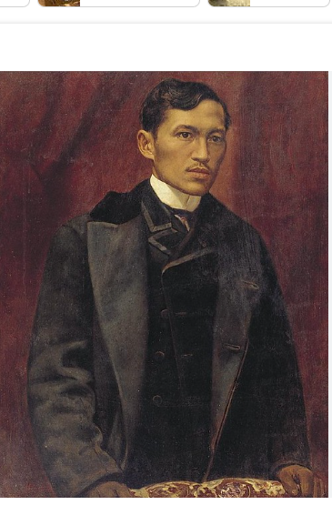

<html lang="en">
 <head>
  <meta charset="utf-8"/>
  <meta content="width=device-width, initial-scale=1.0" name="viewport"/>
  <title>
   Letter to the Women of Malolos
  </title>
  <script src="https://cdn.tailwindcss.com">
  </script>
  <link href="https://cdnjs.cloudflare.com/ajax/libs/font-awesome/5.15.3/css/all.min.css" rel="stylesheet"/>
  <link href="https://fonts.googleapis.com/css2?family=Montserrat:wght@400;600;700&;display=swap" rel="stylesheet"/>
  <link rel="stylesheet" href="work.css">
  <style>

    body {
      font-family: 'Montserrat', sans-serif;
    }
    /* Justify all paragraph text */
    p {
      text-align: justify;
    }
    /* Fade-in animation */
    .fade-in {
      animation: fadeIn 1s ease-in-out;
    }
 </head>
 <body class="bg-white text-gray-800">
  <!-- Header -->
  <header class="bg-white shadow-md fixed w-full z-10">
    <div class="container mx-auto px-4 py-4 flex justify-between items-center">
      <a class="text-2xl font-bold transition duration-300 hover:text-gray-700" href="#">
        Letter to the Women of Malolos
      </a>
      <nav class="hidden md:flex space-x-6">
        <a class="text-gray-600 hover:text-gray-900 transition duration-300" href="home.html">Home</a>
        <a class="text-gray-600 hover:text-gray-900 transition duration-300" href="workpage.html">Works</a>
        <a class="text-gray-600 hover:text-gray-900 transition duration-300" href="analysis.html">Analysis</a>
        <a class="text-gray-600 hover:text-gray-900 transition duration-300" href="gallery.html">Gallery</a>
        <a class="text-gray-600 hover:text-gray-900 transition duration-300" href="resource.html">Resource</a>
      </nav>
      <div class="md:hidden">
        <button class="text-gray-600 focus:outline-none" id="menu-btn">
          <i class="fas fa-bars"></i>
        </button>
      </div>
    </div>
  </header>
  <!-- Mobile Menu -->
  <div class="hidden" id="mobile-menu">
    <nav class="px-4 py-4 bg-white shadow-md">
      <a class="block text-gray-600 hover:text-gray-900 py-2 transition duration-300" href="home.html">Home</a>
      <a class="block text-gray-600 hover:text-gray-900 py-2 transition duration-300" href="workpage.html">Works</a>
      <a class="block text-gray-600 hover:text-gray-900 py-2 transition duration-300" href="analysis.html">Analysis</a>
      <a class="block text-gray-600 hover:text-gray-900 py-2 transition duration-300" href="gallery.html">Gallery</a>
      <a class="block text-gray-600 hover:text-gray-900 py-2 transition duration-300" href="resource.html">Resource</a>
    </nav>
  </div>

<main>
    <div class="section">
      <div class="title">
         <h1> Primary sources</h1>
    </div>

  <div class="card-container">
      <div class="card">
        
        <div class="card-content">
       <h3>Ang Liham Ni Dr. Rizal Sa Mga Kadalagahan Sa Malolos, Bulakan </h3>
       <p>   </p>
       <a href="https://archive.org/details/AngLihamNiDr.RizalSaMgaKadalagahanSaMalolosBulakan/page/n3/mode/2up" target="_blank" class="btn" id="read-more-btn">Read More</a>
      </div>
    </div>

    <div class="card">
        
        <div class="card-content" >
       <h3> Jose Rizal (1889) - Letter To The Young Women of Malolos</h3>
       <p>  </p>
       <a href="https://www.scribd.com/document/740690586/Jose-Rizal-1889-Letter-to-the-Young-Women-of-Malolos" target="_blank" class="btn" id="read-more-btn">Read More</a>
    </div>
    </div>

    <div class="card">
        
        <div class="card-content">
       <h3> To The Young Women of Malolos, <br> Bulacan </h3>
       <p>  </p>
       <a href=" https://www.scribd.com/doc/207663648/To-the-Young-Women-of-Malolos" target="_blank" class="btn" id="read-more-btn1">Read More</a>
    </div>
    </div>

   
  </div>

  


  <div class="section1">
   <div class="title1">
      <h1> Scholarly Articles</h1>
 </div>

  <div class="card-container1">
   <div class="card1">
     
     <div class="card-content">
    <h3> Rizal's Letter to the Women of Malolos : Rizal’s View on Women </h3>
    <p>  </p>
    <a href="https://www.academia.edu/70156161/Rizals_Letter_to_the_Women_of_Malolos" target="_blank" class="btn" id="read-more-btn1">Read More</a>
   </div>
 </div>

 <div class="card1">
     
     <div class="card-content1">
    <h3> Analyzing Jose Rizal's 'Letter to the Women of Malolos'</h3>
    <p>  </p>
    <a href=" https://www.academia.edu/103599415/Analyzing_Jose_Rizals_Letter_to_the_Women_of_Malolos_Empowerment_Education_and_Womens_Roles_in_Society" target="_blank" class="btn" id="read-more-btn1">Read More</a>
 </div>
 </div>

 <div class="card1">
     
     <div class="card-content1">
    <h3> Girl Power: The Women of Malolos, <br> Bulacan</h3>
    <p>  </p>
    <a href=" https://nhcp.gov.ph/girl-power-the-women-of-malolos/" target="_blank" class="btn" id="read-more-btn1">Read More</a>
 </div>
 </div>

 


<div class="section2">
   <div class="title2">
      <h1> Other Relevant Websites</h1>
 </div>

  <div class="card-container2">
   <div class="card2">
     
     <div class="card-content2">
    <h3> Jose Rizal | Biography, Education, Works, Full Name, & Facts </h3>
    <p>  </p>
    <a href="  https://www.britannica.com/biography/Jose-Rizal  " target="_blank" class="btn" id="read-more-btn1">Read More</a>
   </div>
 </div>

 <div class="card2">
     
     <div class="card-content2">
    <h3>Jose Rizal in Filipino Literature and History - Archium.ateneo</h3>
    <p>  </p>
    <a href=" https://archium.ateneo.edu/history-faculty-pubs/43/" target="_blank" class="btn" id="read-more-btn1">Read More</a>
 </div>
 </div>

 <div class="card2">
     
     <div class="card-content2">
    <h3> Jose Rizal: Life, Works & Writings Textbook</h3>
    <p>  </p>
    <a href=" https://studylib.net/doc/26183945/jose-rizal-life--works-and-writings-of-a-genius--writer--" target="_blank" class="btn" id="read-more-btn1">Read More</a>
 </div>
 </div>

 <div class="card2">
     
     <div class="card-content2">
    <h3>Jose Rizal in Filipino Literature and History - Academia</h3>
    <p> </p>
    <a href=" https://www.academia.edu/110589233/Jose_Rizal_in_Filipino_Literature_and_History" target="_blank" class="btn" id="read-more-btn1">Read More</a>
 </div>
 </div>
</section>

 <div class="card2">
   
   <div class="card-content2">
  <h3> José Rizal Philippine National Hero and Ophthalmologist</h3>
  <p>  </p>
  <a href=" https://jamanetwork.com/journals/jamaophthalmology/fullarticle/265463" target="_blank" class="btn" id="read-more-btn1">Read More</a>
</div>
</div>
</main>


<!-- Footer -->
<footer class="bg-[#F8F3D9] text-gray-900 py-8">

  <div class="container mx-auto px-4 text-center">
    <h3 class="text-lg font-semibold">Letter to the Women of Malolos</h3>
    <p class="text-White-400 text-sm mt-2">
      A tribute to the courageous women of Malolos and the legacy of José Rizal.
    </p>

    <div class="mt-6">
      <p class="text-white-500 text-xs">
        All pictures and texts are property of their respective owners. All pictures and texts used on this website are for educational purposes only.
      </p>
    </div>
  </div>
</footer>
<script>
  const menuBtn = document.getElementById('menu-btn');
  const mobileMenu = document.getElementById('mobile-menu');
 
  menuBtn.addEventListener('click', () => {
    if (mobileMenu.classList.contains('hidden')) {
      mobileMenu.classList.remove('hidden');
      mobileMenu.style.animation = 'slideDown 0.5s forwards';
    } else {
      mobileMenu.style.animation = 'slideUp 0.5s forwards';
      setTimeout(() => {
        mobileMenu.classList.add('hidden');
      }, 500);
    }
  });
 
  // Inject keyframes for mobile menu animations
  const styleSheet = document.createElement("style");
  styleSheet.type = "text/css";
  styleSheet.innerText = `
    @keyframes slideDown {
      from { opacity: 0; transform: translateY(-10px); }
      to { opacity: 1; transform: translateY(0); }
    }
    @keyframes slideUp {
      from { opacity: 1; transform: translateY(0); }
      to { opacity: 0; transform: translateY(-10px); }
    }
  `;
  document.head.appendChild(styleSheet);
</script>
</body>
</html>
